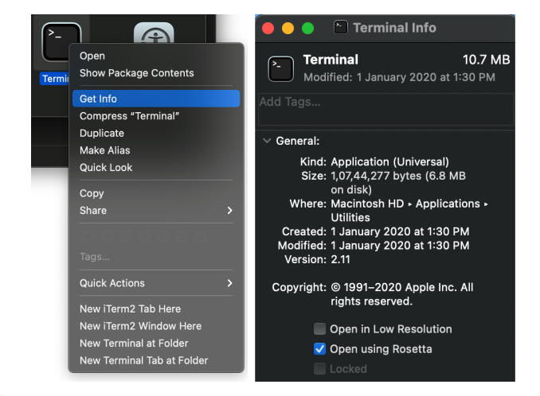

Open Finder and goto Applications. Look for Terminal and right click on “Get Info”
Enable “Open using Rosetta”
Note: You can prefix all commands with arch -x86_64
to force them to use x86 architecture. I have added it, just to be doubly sure.
arch -x86_64 /bin/bash -c "$(curl -fsSL https://raw.githubusercontent.com/Homebrew/install/HEAD/install.sh)"
If you installed Homebrew and want to uninstall, use the following script:
/bin/bash -c "$(curl -fsSL https://raw.githubusercontent.com/Homebrew/install/master/uninstall.sh)"
arch -x86_64 brew install rbenv
arch -x86_64 rbenv install 2.6.3
arch -x86_64 rbenv global 2.6.3
arch -x86_64 code ~/.zshrc #nano or any editor
eval "$(rbenv init -)" #add this to profile to run rbenv on start
arch -x86_64 gem install ffi
arch -x86_64 gem install cocoapods
arch -x86_64 pod install
curl -o- https://raw.githubusercontent.com/nvm-sh/nvm/v0.37.2/install.sh | zsh #Reopen terminal
nvm install --lts=fermium
nvm use default
rm -rf $NVM_DIR ~/.npm ~/.bower
 Webileapps
Webileapps
Webileapps
Webileapps
The general idea is to avoid SUDO as much as possible. Use NVM for node version management Use rbenv for Ruby management. ZSH being the default shell.
Read More Webileapps
The general idea is to avoid SUDO as much as possible. Use NVM for node version management Use rbenv for Ruby management. ZSH being the default shell.
Read More Webileapps
The general idea is to avoid SUDO as much as possible. Use NVM for node version management Use rbenv for Ruby management. ZSH being the default shell.
Read More Webileapps
© WebileApps 2020. All rights reserved